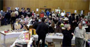

|
|
6.500 Euro für ein besseres Leben in Indien
|
tdh-Kinderfest zog 2.500 Besucher nach Kuppenheim
Das Kinderfest der „terre des hommes“ Arbeitsgruppe
Murgtal / Mittelbaden ist schon lange zu einer
etablierten Veranstaltung geworden. Nach den
Sommerferien, zum Ende der Sommerzeit freuen
sich Jahr für Jahr unzählige Eltern
darauf, mit ihren Kindern noch einmal so richtig
im Freien viel Spaß zu haben. Was den Kindern
der mittelbadischen Region am Sonntagnachmittag
Freude bereitete, beschert den Kindern in Indien
ein etwas besseres
Leben.
zum Pressebericht |
|
Täglich erhalten 500 Flüchtlinge
in Darfur ein Dach über dem Kopf
|
Den Tod von Kindern
verhindern: ein Wettlauf mit der Zeit
Mitten in der Regenzeit erstellt die Schweizer
Kinderhilfsorganisation Terre des hommes (www.tdh.ch)
täglich Unterkünfte für 500 Flüchtlinge
in den Lagern bei El Geneina in Westdarfur. Bis
Ende September werden ausserdem dreissig Spielplätze
für Kinder und fünf Gemeinschaftsräume
eingerichtet.
Meldung lesen
Spenden für Darfur werden erbeten an
terre des hommes
Konto 700 800
700
Stichwort »Sudan«
Volksbank Osnabrück eG
BLZ 265 900 25
Es besteht auch die Möglichkeit der Online-Spende (Stichwort: »Sudan«).
Weitere Infos:
|
|
Jahresergebnis 2003 von tdh Murgtal / Mittelbaden:
82.527 Euro
Reinerlös
|
|
 |
| allj�hrlicher Publikumsmagnet: Basar mit Kunstmarkt - dieses Jahr am 14.11.2004 |
Im
Einzugsbereich
der Arbeitsgruppe terre des
hommes Murgtal
/ Mittelbaden kam im Jahre
2003 ein Ergebnis
von 82.527
Euro zusammen. Im
Vergleich
zum vergangenen Jahr bedeutet
dies eine Verringerung um 1,3 Prozent.
Diese stolze Summe erzielte die Arbeitsgruppe durch
verschiedene Aktionen:
Darüber hinaus erhielt terre des hommes Murgtal
/ Mittelbaden
viele Spenden im Laufe des Jahres 2003, u.a. bei
bestimmten Anlässen:
- vor allem bei runden Geburtstagen
- bei Erstkommunion
und Konfirmation
- zum
Jahreswechsel (Spende anstatt Geschenke)
- bei
Schul- und Kindergartenfesten
- vereinzelt
auch bei Hochzeiten, Geburten und
Todesfällen
Viele Projektpartner
sind seit Beginn der tdh-Aktivitäten
im Raum
Kuppenheim-Bischweier-Gaggenau 27 Jahre treu geblieben. Viele
neue kamen dazu.
Ein große Zahl großzügiger Mitmenschen überweist ihre
Spende direkt auf das Konto von terre des hommes Deutschland.
Rund
100 Firmen und Geschäftleute der näheren
Umgebung trugen
mit etwa 20.000 € Werbe- und Sponsorengeldern
zum Reinerlös von terre des hommes bei.
83.000 € wurden vor allem verwendet für:
Woher kamen die Spender ?
Die größte Anzahl der Spender kam aus dem Raum Kuppenheim – Gaggenau – Rastatt,
gefolgt von Baden-Baden. Insgesamt kamen Spenden von Rheinstetten
bis Rheinmünster und von Au am Rhein bis Forbach.
Seit Bestehen der Arbeitsgruppe summierten sich
Spendengelder
und Aktionserlöse
auf 1,433 Millionen
Euro (Stand Ende
2003). Damit
konnten mehreren tausend Kindern in Lateinamerika,
Afrika und Asien
wirksam geholfen
werden. In diesem
Jahr wird terre des hommes Murgtal
/ Mittelbaden
die 1,5-Mio-Marke überschreiten. |
|
Weltkindertag am 20. September:
terre
des
hommes
mahnt
Einhaltung
von
Standards
bei
Auslandsadoptionen
an
|
Die Haager Konvention muss die Grundlage für
die Praxis der Adoptionsvermittlung ausländischer
Kinder nach Deutschland bleiben. Ihre mühsam
erkämpften Standards dürfen nicht durch
Privatadoptionen in Eigenregie unterlaufen werden.
Diese Forderung erhob das entwicklungspolitische
Kinderhilfswerk terre des hommes auf einer Pressekonferenz
in Berlin anlässlich des bevorstehenden Weltkindertages. »Als
entwicklungspolitisches Kinderhilfswerk steht für
uns das Wohl von Kindern bei der Auslandsadoption
im Mittelpunkt«, erklärte Bernd Wacker,
Adoptionsexperte von terre des hommes. Hierfür
biete die Haager Konvention, die 1993 international
verabschiedet wurde und in Deutschland am 1. März
2002 in Kraft trat, eine beispielhafte Grundlage. »Ein
nach den Bestimmungen der Haager Konvention durchgeführtes
Adoptionsvermittlungsverfahren stellt sicher, dass
dem Recht des vermittelten Kindes oberste Priorität
eingeräumt wird«, so Bernd Wacker weiter.
In der Haager Konvention wird festgelegt, dass Auslandsadoptionen
erst
dann
durchzuführen sind, wenn eine Vermittlung
des
Kindes
in seinem Herkunftsland nicht möglich
ist.
Ferner
fordert die Konvention eine enge Zusammenarbeit der
Behörden im Herkunfts- wie im Aufnahmeland
des
Kindes.
Nur staatliche Institutionen und staatlich kontrollierte
Organisationen
sind nach den Bestimmungen der Haager
Konvention
zugelassen, um Auslandsadoptionen zu
vermitteln.
In Deutschland sind dies die zentralen Adoptionsstellen
der
Landesjugendämter und anerkannte Auslandsvermittlungsstellen.
Sie
sind auch für
die
Vermittlung
von Kindern aus Nicht-Beitrittsstaaten der
Konvention
zuständig.
»Die amtierende Bundesregierung hat sich sehr
für die Verwirklichung der Haager Konvention
eingesetzt«, so Bernd Wacker weiter. »Umso
dringlicher ist nun unser Appell, dieses bewährte
Regelwerk nicht zu umgehen oder zu unterlaufen.«
terre des hommes hat 1994 die Vermittlung von Auslandsadoptionen
eingestellt und fördert heute eine Vielzahl
von Projekten für verlassene Kinder in ihren
Herkunftsländern. Im Rahmen der Internationalen
terre des hommes-Kampagne gegen den Kinderhandel
wendet sich terre des hommes auch gegen den weltweiten
Adoptionskinderhandel.
weitere Informationen:
Informationen zum Thema Adoption |
|
Die seit langem schlimmsten Überschwemmungen
in Bangladesch verursachen Durchfallerkrankungen
und Choleragefahr
|
|
Terre des hommes
Schweiz bringt Hilfe für Kinder und ihre Angehörigen
im Norden und dann im Zentrum des Landes, das aufgrund
des Wasseranstiegs der vier grössten Flüsse überflutet
ist. Lokale Partnerorganisationen werden 100'000 Bewohner,
die alles oder einen Teil ihrer Habe verloren haben,
Grundnahrungsmittel und medizinische Notversorgung bieten.
Chinnamukul und Aparajeyo, zwei von Terre des hommes
gegründete und unterstützte Organisationen,
verfügen über grosse Erfahrung bei Überschwemmungen
und liefern den Not leidenden Familien in Kurigram
und dann Dakka Reis, Linsen, Öl und Salz. Diese
Hilfe und Medikamente (Wasser desinfizierende Tabletten,
Salz zur Rehydrierung bei Durchfall usw.) sind für
sie absolut lebensnotwendig.
Mit Unterstützung der Glückskette stellt
Terre des hommes die Ernährung und medizinische
Versorgung der betroffenen Haushalte sicher. Nathalie
Praz, Projektkoordinatorin für Asien am Hauptsitz
von Terre des hommes, wird sich sofort vor Ort begeben: «Wir
wollen, dass die Hilfsaktionen den Kindern und Familien
unverzüglich zugute kommen.»
Seit Mitte Juli ist der Süden Asiens von den
schwersten Überschwemmungen seit Jahrzehnten
betroffen. Der Norden von Bangladesch kämpft
gegen die Wassermengen an, wie auch die Hauptstadt
Dakka in der Landesmitte, wo inzwischen Millionen
Menschen, darunter die ärmsten, obdachlos sind.
Exkremente und Giftstoffe vermischen sich in den
Städten mit dem ansteigenden Wasser und bringen
Durchfall und Choleragefahr.
Aktuelle Infos: www.tdh.ch
|
|
Kolumbien: Jugendliche auf offener
Straße ermordet
|
|
15-Jähriger aus terre des
hommes-Projekt unter den Opfern
Neue Eskalation der Gewalt in Kolumbien: In Altos
de Cazucá, einem Vorort der Hauptstadt Bogotá,
sind am 19. August vier Jugendliche auf offener Straße
regelrecht hingerichtet worden. Insider vermuten,
dass es sich dabei um eine Art "Machtdemonstration" bewaffneter
Gruppierungen handeln könnte, da am selben Tag
im kolumbianischen Parlament eine Anhörung zur
beängstigenden Situation der Menschenrechte
in eben diesem Vorort stattfand.
Bei den Toten handelt sich um Mario Macías
(20 Jahre), Jaime Garcia (16), Carlos Peña
(20) sowie William Pino (15), der sich im terre des
hommes-Projekt "Taller de Vida" für
ein friedliche Beilegung des kolumbianischen Konfliktes
einsetzte. "Wir sind traurig und bestürzt über
diese brutale und sinnlose Tat", erklärt
Andreas Rister, Referent für Menschenrechte
des entwicklungspolitischen Kinderhilfswerks terre
des hommes. "Laut Augenzeugenberichten wollten
die Jugendlichen unterwegs Backmaterialien für
eine Bäckerei kaufen, als sie von vier schwer
bewaffneten Männern angehalten wurden. Die Jugendlichen
mussten sich auf den Boden legen und wurden durch
Kopfschüsse ermordet."
Im Vorort Altos de Cazucá haben zahlreiche
interne Vertriebene Zuflucht gefunden, die vor dem
bewaffneten Konflikt vom Land in die Stadt geflohen
sind. Laut kolumbianischer Menschenrechtsorganisationen
sind seit 2001 allein in Altos de Cazucá 224
Jugendliche ermordet worden, ohne dass die Schuldigen
bisher zur Verantwortung gezogen worden seien. "Die
kolumbianische Regierung hat trotz wiederholter Aufforderung
bisher nichts unternommen, die Bevölkerung vor Übergriffen
zu schützen", klagt Andreas Rister. "Besonders
gefährdet sind Jugendliche, aber auch Sprecher
von Nichtregierungsorganisationen werden systematisch
ermordet."
Angesichts des jüngsten tragischen Ereignisses
fordert terre des hommes die kolumbianische Regierung
eindringlich auf, die Schuldigen ausfindig zu machen
und vor Gericht zur Rechenschaft zu ziehen, die Familien
der Opfer zu entschädigen sowie die körperliche
Unversehrtheit der Menschen in Altos de Cazucá zu
garantieren.
(Meldung aus dem terre des hommes-Pressereferat
vom 24.08.2004)
|
|
|
|
 Ansprechpartner Ansprechpartner
|
|
Wolfgang Deppisch
(Projektinfos)
Tel. 07222 / 32927
Heinz Wolf
(Sponsoring, Allgemeines)
Tel. 07225 / 75543
weitere Ansprechpartner
|
|
Erlöse
1992-2012
|
|

Jahr |
Euro |
1992 |
70.000 |
1993 |
75.600 |
1994 |
83.883 |
1995 |
69.617 |
1996 |
51.412 |
1997 |
61.749 |
1998 |
60.333 |
1999 |
68.742 |
2000 |
85.492 |
2001 |
106.375 |
2002 |
78.937 |
2003 |
84.027 |
2004 |
76.662 |
2005 |
149.941 |
2006 |
84.497 |
2007 |
105.958 |
2008 |
104.053 |
2009 |
100.833 |
2010 |
107.254 |
2011 |
103.600 |
| 2012 |
158.250 |
| 2013 |
163.420 |
1977-2013 |
mehr als 2,7 Mio. € |
|
Detailansicht der Erlöszahlen |
|
|


;)
;)